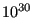
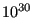

Next: *USER ELEMENT Up: Input deck format Previous: *TRANSFORM Contents
Keyword type: step
This procedure is used to perform an uncoupled thermomechanical analysis. For each increment a thermal analysis is performed first. Then, the resulting temperature field is used as boundary condition for a subsequent mechanical analysis for the same increment. Consequently, there is no feedback from the mechanical deformation on the temperature field within one and the same increment. Due to the sequential calculations the resulting systems of equations are smaller and faster execution times can be expected. Moreover, the number of iterations within the increment is determined for the thermal and mechanical analysis separately, whereas in a coupled thermomechanical analysis the worst converging type of analysis dictates the number of iterations.
There are eight optional parameters: SOLVER, DIRECT, ALPHA, STEADY STATE, DELTMX, EXPLICIT, TIME RESET and TOTAL TIME AT START.
SOLVER determines the package used to solve the ensuing system of equations. The following solvers can be selected:
Default is the first solver which has been installed of the following list: SGI, PaStiX, PARDISO, SPOOLES and TAUCS. If none is installed, the default is the iterative solver, which comes with the CalculiX package.
The SGI solver should by now be considered as outdated.SPOOLES is very fast, but has no
out-of-core capability: the size of systems you can solve is limited by your
RAM memory. With 32GB of RAM you can solve up to 1,000,000 equations. TAUCS is
also good, but my experience is limited to the  decomposition, which
only applies to positive definite systems. It has an out-of-core capability
and also offers a
decomposition, which
only applies to positive definite systems. It has an out-of-core capability
and also offers a  decomposition, however, I was not able to run either of
them so far. PARDISO is the Intel proprietary solver and is about a factor of
two faster than SPOOLES. The most recent solver we tried is the freeware
solver PaStiX from INRIA. It is
really fast and can use the GPU. For large problems and a high end Nvidea graphical
card (32 GB of RAM) we got an acceleration of a factor between 3 and 8
compared to PARDISO. We modified PaStiX for this, therefore you have to
download PaStiX from our website and compile it for your system. This can be
slightly tricky, however, it is worth it!
decomposition, however, I was not able to run either of
them so far. PARDISO is the Intel proprietary solver and is about a factor of
two faster than SPOOLES. The most recent solver we tried is the freeware
solver PaStiX from INRIA. It is
really fast and can use the GPU. For large problems and a high end Nvidea graphical
card (32 GB of RAM) we got an acceleration of a factor between 3 and 8
compared to PARDISO. We modified PaStiX for this, therefore you have to
download PaStiX from our website and compile it for your system. This can be
slightly tricky, however, it is worth it!
What about the iterative solver? If SOLVER=ITERATIVE SCALING is selected, the preconditioning is limited to a scaling of the diagonal terms, SOLVER=ITERATIVE CHOLESKY triggers Incomplete Cholesky preconditioning. Cholesky preconditioning leads to a better convergence and maybe to shorter execution times, however, it requires additional storage roughly corresponding to the nonzeros in the matrix. If you are short of memory, diagonal scaling might be your last resort. The iterative methods perform well for truly three-dimensional structures. For instance, calculations for a hemisphere were about nine times faster with the ITERATIVE SCALING solver, and three times faster with the ITERATIVE CHOLESKY solver than with SPOOLES. For two-dimensional structures such as plates or shells, the performance might break down drastically and convergence often requires the use of Cholesky preconditioning. SPOOLES (and any of the other direct solvers) performs well in most situations with emphasis on slender structures but requires much more storage than the iterative solver.
The parameter DIRECT indicates that automatic incrementation should be switched off. The increments will have the fixed length specified by the user on the second line.
The parameter ALPHA takes an argument between -1/3 and 0. It controls the dissipation of the high frequency responce: lower numbers lead to increased numerical damping ([55]). The default value is -0.05.
The parameter STEADY STATE indicates that only the steady state should be calculated. If this parameter is absent, the calculation is assumed to be time dependent and a transient analysis is performed. For a transient analysis the specific heat of the materials involved must be provided.
The parameter DELTMX can be used to limit the temperature change in two
subsequent increments. If the temperature change exceeds DELTMX the increment
is restarted with a size equal to  times DELTMX divided by the
temperature change. The default for
times DELTMX divided by the
temperature change. The default for  is 0.85, however, it can be changed
by the *CONTROLS keyword. DELTMX is only active in transient calculations. Default value is .
is 0.85, however, it can be changed
by the *CONTROLS keyword. DELTMX is only active in transient calculations. Default value is .
The parameter EXPLICIT is only important for fluid computations. If present, the fluid computation is explicit, else it is semi-implicit. Coupled structural computations are always implicit.
The parameter TIME RESET can be used to force the total time at the end of the present step to coincide with the total time at the end of the previous step. If there is no previous step the targeted total time is zero. If this parameter is absent the total time at the end of the present step is the total time at the end of the previous step plus the time period of the present step (2nd parameter underneath the *UNCOUPLED TEMPERATURE-DISPLACEMENT keyword). Consequently, if the time at the end of the previous step is 10. and the present time period is 1., the total time at the end of the present step is 11. If the TIME RESET parameter is used, the total time at the beginning of the present step is 9. and at the end of the present step it will be 10. This is sometimes useful if transient uncoupled temperature-displacement calculations are preceded by a stationary heat transfer step to reach steady state conditions at the start of the transient uncoupled temperature-displacement calculations. Using the TIME RESET parameter in the stationary step (the first step in the calculation) will lead to a zero total time at the start of the subsequent instationary step.
Finally, the parameter TOTAL TIME AT START can be used to set the total time at the start of the step to a specific value.
First line:
Example: *UNCOUPLED TEMPERATURE-DISPLACEMENT .1,1.
defines an uncoupled thermomechanical step and selects the SPOOLES solver as linear equation solver in the step (default). The second line indicates that the initial time increment is .1 and the total step time is 1.
Example files: thermomech2.